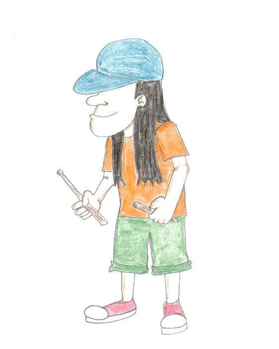

Wayne Rock

Wayne Rock is the drummer of Bulletproof Radio. He was born in London, England. As a child he dreamed of travelling
"across the pond" to pursue his dream of becoming a rock star in America. He got his start in several London based punk bands
as a teenager. But he wanted more. So when the oppurtunity to move to New York City knocked at his door, he quickly responded and
relocated without looking back.